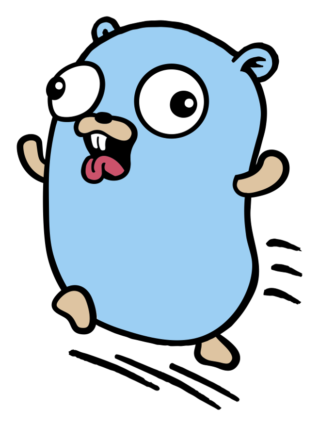

gokrazy is an appliance platform for Go programs: with just a few commands, you can deploy your Go program(s) on a Raspberry Pi or a (typically small) PC.
I’m excited to let you know that gokrazy now comes with a re-designed gok
command line tool and gokrazy instance configuration mechanism!
Context: gokrazy in a few words
The traditional way to run Go software on a Raspberry Pi would be to install Raspbian or some other Linux distribution onto the SD card, copy over your program(s) and then maintain that installation (do regular updates).
I thought it would be nicer to run my Raspberry Pis such that only Go software is run by the Linux kernel on it, without any traditional Linux distribution programs like package managers or even the usual GNU Core Utilities.
gokrazy builds Go programs into a read-only SquashFS root file system image. When that image is started on a Raspberry Pi, a minimal init system supervises the Go programs, and a DHCP and NTP client configure the IP address and synchronize the time, respectively. After the first installation, all subsequent updates can be done over the network, with an A/B partitioning scheme.
I use gokrazy to, for example:
-
Connect to the internet using router7, my small home internet router written in Go, running on a fast router PC build that handles a 25 Gbit/s Fiber To The Home connection.
-
Automate the lights in my home, and control and monitor the heating.
-
Offer Tailscale access to a Raspberry Pi Zero 2 W in my home network to then send Wake On Lan (WOL) packets before SSH’ing into my normally-suspended computers. See also my post DIY out-of-band management: remote console server (2022).
Before and after
Previously, the concept of gokrazy instance configuration was only a
convention. Each gokrazy build was created using the gokr-packer CLI tool, and
configured by the packer’s command-line flags, parameters, config files in
~/.config and per-package config files in the current directory
(e.g. flags/github.com/gokrazy/breakglass/flags.txt).
Now, all gokrazy commands and tools understand the --instance flag (or -i
for short), which determines the directory from which the Instance
Config is read. For a gokrazy
instance named “hello”, the default directory is ~/gokrazy/hello, which
contains the config.json file.
Example: creating an instance for a Go working copy
Let’s say I have the evcc repository cloned
as ~/src/evcc. evcc is an electric vehicle charge controller with PV
integration, written in Go.
Now I want to run evcc on my Raspberry Pi using gokrazy. First, I create a new
instance:
% gok -i evcc new
gokrazy instance configuration created in /home/michael/gokrazy/evcc/config.json
(Use 'gok -i evcc edit' to edit the configuration interactively.)
Use 'gok -i evcc add' to add packages to this instance
To deploy this gokrazy instance, see 'gok help overwrite'
Now let’s add our working copy of evcc to the instance:
% gok -i evcc add .
2023/01/15 18:55:39 Adding the following package to gokrazy instance "evcc":
Go package : github.com/evcc-io/evcc
in Go module: github.com/evcc-io/evcc
in local dir: /tmp/evcc
2023/01/15 18:55:39 Creating gokrazy builddir for package github.com/evcc-io/evcc
2023/01/15 18:55:39 Creating go.mod with replace directive
go: creating new go.mod: module gokrazy/build/github.com/evcc-io/evcc
2023/01/15 18:55:39 Adding package to gokrazy config
2023/01/15 18:55:39 All done! Next, use 'gok overwrite' (first deployment), 'gok update' (following deployments) or 'gok run' (run on running instance temporarily)
We might want to monitor this Raspberry Pi’s stats later, so let’s add the Prometheus node exporter to our gokrazy instance, too:
% gok -i evcc add github.com/prometheus/node_exporter
2023/01/15 19:04:05 Adding github.com/prometheus/node_exporter as a (non-local) package to gokrazy instance evcc
2023/01/15 19:04:05 Creating gokrazy builddir for package github.com/prometheus/node_exporter
2023/01/15 19:04:05 Creating go.mod before calling go get
go: creating new go.mod: module gokrazy/build/github.com/prometheus/node_exporter
2023/01/15 19:04:05 running [go get github.com/prometheus/node_exporter@latest]
go: downloading github.com/prometheus/node_exporter v1.5.0
[…]
2023/01/15 19:04:07 Adding package to gokrazy config
It’s time to insert an SD card (/dev/sdx), which we will overwrite with a
gokrazy build:
% gok -i evcc overwrite --full /dev/sdx
See gokrazy quickstart for more detailed instructions.
Automation
The new gok subcommands (add, update, etc.) are much easier to manage than
long gokr-packer command lines.
The new Automation page shows how
to automate common tasks, be it daily updates via cron, or automated building
in Continuous Integration environments like GitHub Actions.
Migration
Are you already a gokrazy user? If so, see the Instance Config Migration
Guide for how to switch from
the old gokr-packer tool to the new gok command.
Feedback / Questions?
If you have any questions, please feel free to reach out at gokrazy GitHub Discussions 👋